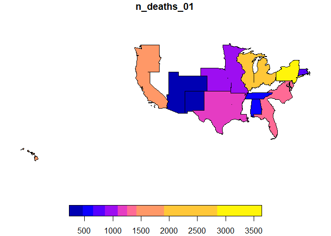

Multidimensional systems allow complex queries to be carried out in an easy way. The geographic dimension, together with the temporal dimension, plays a fundamental role in multidimensional systems. Through the geomultistar package, vector geographic data layers can be associated to the attributes of geographic dimensions, so that the results of multidimensional queries can be obtained directly as vector geographic data layers. In other words, this package allows enriching multidimensional queries with geographic data.
The multidimensional structures on which we can define the queries can be created from flat tables with the rolap or starschemar packages, or imported directly using functions from the geomultistar package.
Installation
You can install the released version of geomultistar from CRAN with:
install.packages("geomultistar")And the development version from GitHub with:
# install.packages("devtools")
devtools::install_github("josesamos/geomultistar")Example
If we start from a flat table, we can generate a star schema using the rolap package, as described in its vignettes.
If we have a star schema in another tool, we need to import the fact and dimension tables into R in the form of tables implemented by tibble (mrs_fact_age, mrs_fact_cause, mrs_where, mrs_when and mrs_who in the example). Once we have them in this format, we have to build a multistar structure from them: This structure can contain multiple fact and dimension tables, so facts can share dimensions. The definition for tables is included below. The measures of the facts are defined and the relationships between facts and dimensions are established.
library(geomultistar)
ms <- multistar() |>
add_facts(
fact_name = "mrs_age",
fact_table = mrs_fact_age,
measures = "n_deaths",
nrow_agg = "count"
) |>
add_facts(
fact_name = "mrs_cause",
fact_table = mrs_fact_cause,
measures = c("pneumonia_and_influenza_deaths", "other_deaths"),
nrow_agg = "nrow_agg"
) |>
add_dimension(
dimension_name = "where",
dimension_table = mrs_where,
dimension_key = "where_pk",
fact_name = "mrs_age",
fact_key = "where_fk"
) |>
add_dimension(
dimension_name = "when",
dimension_table = mrs_when,
dimension_key = "when_pk",
fact_name = "mrs_age",
fact_key = "when_fk",
key_as_data = TRUE
) |>
add_dimension(
dimension_name = "who",
dimension_table = mrs_who,
dimension_key = "who_pk",
fact_name = "mrs_age",
fact_key = "who_fk"
) |>
relate_dimension(dimension_name = "where",
fact_name = "mrs_cause",
fact_key = "where_fk") |>
relate_dimension(dimension_name = "when",
fact_name = "mrs_cause",
fact_key = "when_fk")Once we have a multistar structure, we will associate vector geographic data layers to the attributes of the geographic dimension. We can use existing layers or generate them from the previous definitions. As a result we will have a geomultistar structure.
gms <-
geomultistar(ms, geodimension = "where") |>
define_geoattribute(
attribute = "city",
from_layer = usa_cities,
by = c("city" = "city", "state" = "state")
) |>
define_geoattribute(
attribute = "county",
from_layer = usa_counties,
by = c("county" = "county", "state" = "state")
) |>
define_geoattribute(
attribute = c("state"),
from_layer = usa_states,
by = c("state" = "state")
) |>
define_geoattribute(from_attribute = "state")In the last definition, because no geographic attribute is specified, the rest of the dimension’s attributes are automatically defined from the layer associated with the indicated parameter.
Finally, we can define multidimensional queries on this structure using the functions available in this package. When executing these queries, the vector geographic data layers of the attributes will be taken into account to result in a new vector geographic data layer.
gdqr <- dimensional_query(gms) |>
select_dimension(name = "where",
attributes = c("division_name", "region_name")) |>
select_dimension(name = "when",
attributes = c("year", "week")) |>
select_fact(name = "mrs_age",
measures = c("n_deaths")) |>
select_fact(
name = "mrs_cause",
measures = c("pneumonia_and_influenza_deaths", "other_deaths")
) |>
filter_dimension(name = "when", week <= "03") |>
run_geoquery(wider = TRUE)The result is a vector geographic data layer that we can save or we can see it as a map, using the functions associated with the sf class.

Although we have indicated in the query the attributes division_name and region_name, as can be seen in the figure, the result obtained is at the finest granularity level, in this case at the division_name level.
Only the parts of the divisions made up of states where there is recorded data are shown. If we wanted to show the full extent of each division, we should have explicitly associated a layer at that level.
The result includes the meaning of each variable in table form.
| id_variable | measure | week |
|---|---|---|
| n_deaths_01 | n_deaths | 01 |
| n_deaths_02 | n_deaths | 02 |
| n_deaths_03 | n_deaths | 03 |
| count_01 | count | 01 |
| count_02 | count | 02 |
| count_03 | count | 03 |
| mrs_cause_pneumonia_and_influenza_deaths_01 | mrs_cause_pneumonia_and_influenza_deaths | 01 |
| mrs_cause_pneumonia_and_influenza_deaths_02 | mrs_cause_pneumonia_and_influenza_deaths | 02 |
| mrs_cause_pneumonia_and_influenza_deaths_03 | mrs_cause_pneumonia_and_influenza_deaths | 03 |
| mrs_cause_other_deaths_01 | mrs_cause_other_deaths | 01 |
| mrs_cause_other_deaths_02 | mrs_cause_other_deaths | 02 |
| mrs_cause_other_deaths_03 | mrs_cause_other_deaths | 03 |
It can be saved directly as a GeoPackage, using the save_as_geopackage() function.
save_as_geopackage(vl_sf_w, "division")